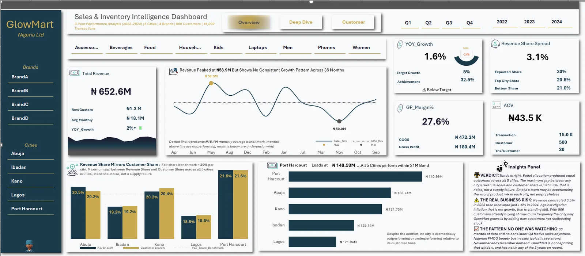
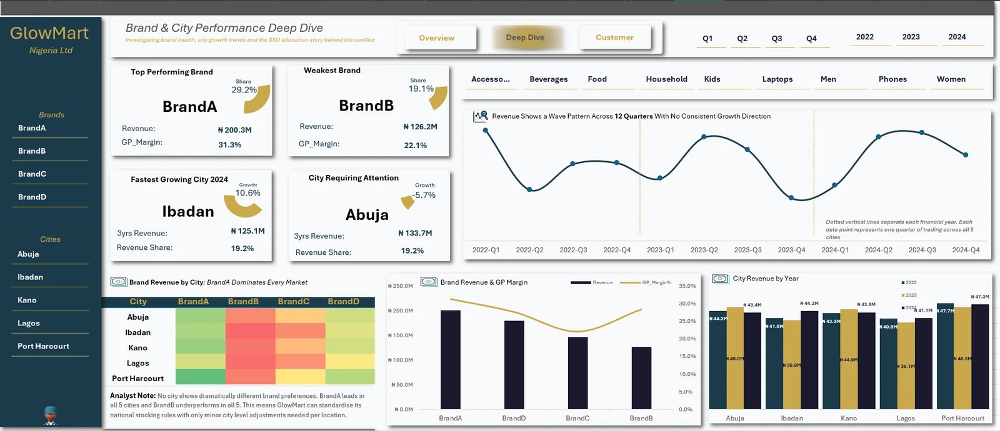
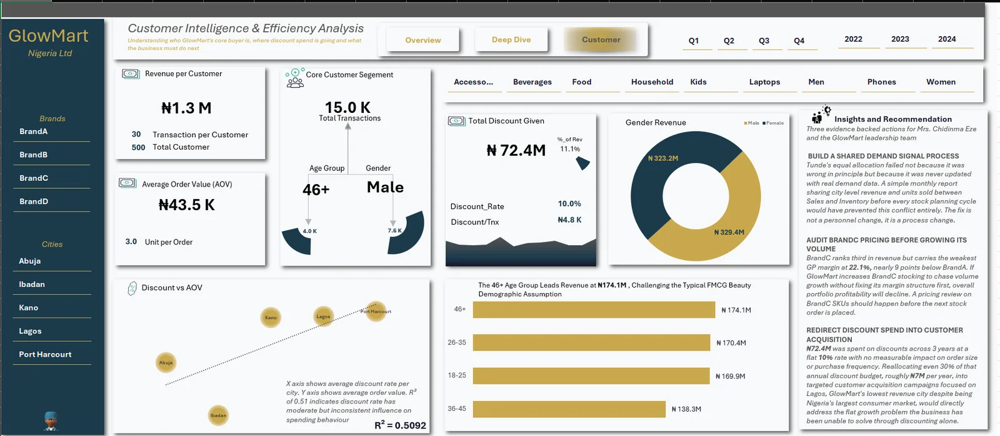

GlowMart Nigeria Ltd is a realistic business scenario from the SkillAhead Data Analytics Challenge. The figures here come from that challenge dataset, not from a real company's accounts.
The disagreement
GlowMart Nigeria Ltd is a nationwide FMCG retailer selling across five cities: Abuja, Ibadan, Kano, Lagos and Port Harcourt.
Emeka, the Sales Manager, believed Port Harcourt and Kano sold strongly because demand was higher than the stock they received. He wanted more inventory sent there.
Tunde, the Inventory Manager, said stock was already shared equally across the five cities. In his view the gap came from customer demand, not from allocation.
The Managing Director could not tell who was right, so three questions came to me. Is stock shared fairly? What is really driving revenue? What should management do next?
The short answer
Stock was never the problem. Revenue share and customer share matched in every city, with the biggest gap about 0.3%. The real issues were flat growth, discounts that did not lift order value, and two cities that shrank in 2024, Abuja most of all.
Numbers at a glance
What I found
Stock was shared fairly
Are some cities getting less stock than they should?
| City | Revenue share | Customer share | Gap (points) |
|---|---|---|---|
| Abuja | 20.5% | 20.2% | 0.3 |
| Ibadan | 19.2% | 19.2% | 0.0 |
| Kano | 20.2% | 20.4% | 0.2 |
| Lagos | 18.5% | 18.6% | 0.1 |
| Port Harcourt | 21.6% | 21.6% | 0.0 |
What it means. Emeka's worry would show up as a gap between a city's share of revenue and its share of customers. There is no gap. Port Harcourt holds 21.6% of revenue and 21.6% of customers. Kano holds 20.2% and 20.4%. The largest difference anywhere is about 0.3 points.
Leave stock allocation as it is. Put the attention on growth.
Growth has stalled
Is the business actually growing?
| Year | Revenue | Change on previous year |
|---|---|---|
| 2022 | ₦217.1M | n/a |
| 2023 | ₦216.0M | -0.5% |
| 2024 | ₦219.5M | +1.6% |
What it means. The brief set a growth target of 5% a year. GlowMart missed it both years. Customers keep buying and the transaction count is high, but revenue is flat.
The main challenge is sustainable growth, not stock.

Brands are not equal
Which brands make money, not just sales?
| Brand | Revenue | Gross margin |
|---|---|---|
| Brand A | ₦200.3M | 31.3% |
| Brand D | ₦179.7M | 27.6% |
| Brand C | ₦146.4M | 22.1% |
| Brand B | ₦126.2M | 28.4% |
What it means. Brand A is the strongest on both revenue and margin. Brand C sells well but earns the least from each naira of sales. Brand B has the smallest revenue but a healthy margin, so it looks like a brand that needs more exposure, not a price change.
Each brand needs its own plan. One national approach would hide these differences.
Abuja needs attention first
Which cities are growing and which are not?
| City | 2024 growth |
|---|---|
| Ibadan | +10.6% |
| Lagos | +5.0% |
| Port Harcourt | +2.7% |
| Kano | -2.9% |
| Abuja | -5.7% |
What it means. Abuja fell the most, and Kano also slipped. Because stock is already shared fairly, the cause is more likely commercial than about supply. The data cannot tell me what the cause is. Competitors, pricing, product range, customer retention and local demand are all worth checking.
Look at Abuja first and keep an eye on Kano.

Discounts cost money and did not lift order value
Are discounts making customers spend more?
GlowMart gave away about ₦72.4M in discounts, which is 11.1% of revenue. If discounts work, higher discounts should come with bigger orders.
I compared discount rate against average order value across the cities. Cities with slightly higher discounts did not have noticeably larger orders. Average order value across all sales was about ₦43,507.
What it means. The business is giving up revenue without getting bigger baskets in return. This is the clearest efficiency problem in the whole project.
Review the discount strategy. Judge each campaign by the return it brings, not by how big the discount is.
Customers are spread evenly
Who is the core customer?
Spending is spread fairly evenly across age groups and between men and women. No single group carries the business.
What it means. GlowMart serves a broad customer base instead of depending on one segment.
Keep marketing broad, and add more personal offers for the highest-value groups.

No festive peak
Is there a seasonal pattern?
Quarterly revenue moves only a little across the three years. There is no regular fourth quarter spike, which retailers in this sector often see.
What it means. That may mean festive season chances are being missed.
Plan promotions around the festive period and measure what they add.
What I would do
Focus on growth, not stock
- Evidence
- Revenue share matched customer share within 0.3%, and growth was -0.5% then +1.6% against a 5% target.
- What to do
- Run customer acquisition campaigns, improve the loyalty programme, cross-sell related products, reach new customer groups, and back it with sales-led marketing.
- What I expect
- Raising demand should do more for revenue than moving stock that is already balanced.
Review the discount strategy
- Evidence
- ₦72.4M in discounts with no clear lift in average order value.
- What to do
- Swap blanket discounts for targeted ones: offers by customer group, product bundles, loyalty rewards and time-limited campaigns. Measure every campaign by its return on spend.
- What I expect
- Cutting discounts that do nothing should lift gross profit while keeping customers engaged.
Review Abuja, and watch Kano
- Evidence
- Abuja fell 5.7% in 2024 and Kano fell 2.9%, while Ibadan grew 10.6%.
- What to do
- Look at local competitors, pricing, product range, customer retention and marketing results in both cities, starting with Abuja.
- What I expect
- Acting early may stop further decline and lift the national total.
Give each brand its own plan
- Evidence
- Brand A leads on revenue and margin. Brand B has a healthy margin but the least revenue. Brand C sells well but earns the least.
- What to do
- Brand A: more visibility and stock support. Brand B: more marketing exposure. Brand C: review pricing and buying costs.
- What I expect
- Brand level plans should beat one national approach.
Use the dashboard every month
- Evidence
- The dashboard tracks the same KPIs in every period, so changes are easy to spot.
- What to do
- Put it into the monthly management review instead of treating it as a one-off report.
- What I expect
- Problems show up early, before they turn into operating issues.
What this can't tell you
This covers three years and one dataset of 15,000 transactions and 500 customers. It is a case study, so it should not be read as the accounts of a real company.
I measured gross profit only, which is revenue minus the direct cost of goods. Running costs such as staff, rent and marketing are not part of this analysis.
The discount check compares cities, so it rests on a small number of points. It shows no clear link between discounts and order value. It does not prove that discounts never work.
For Abuja and Kano, I can show that they declined. I cannot show why. The list of possible causes is where to start looking, not a finding.